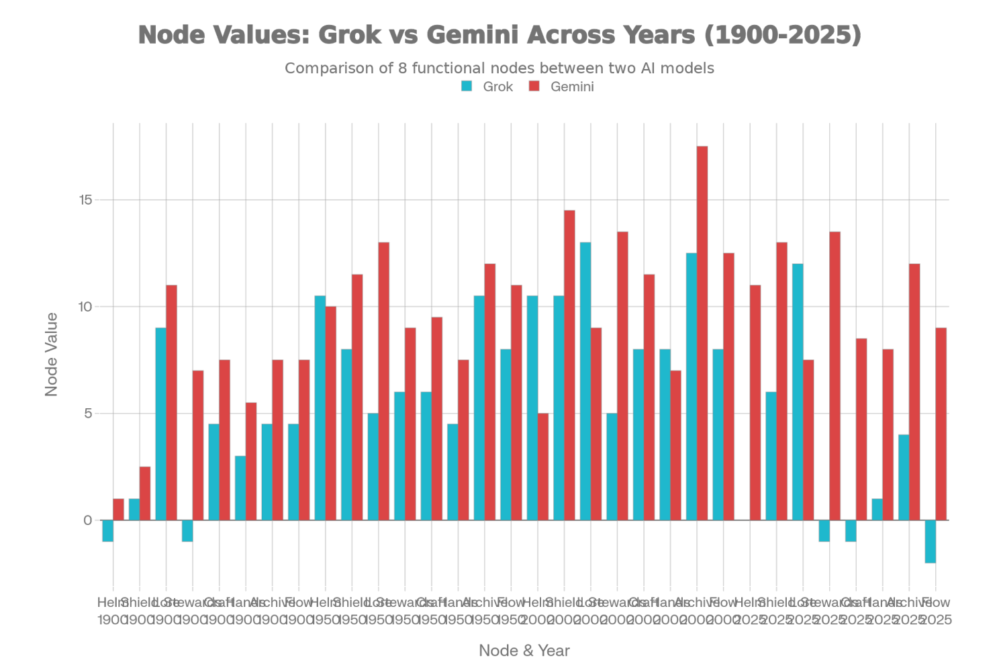
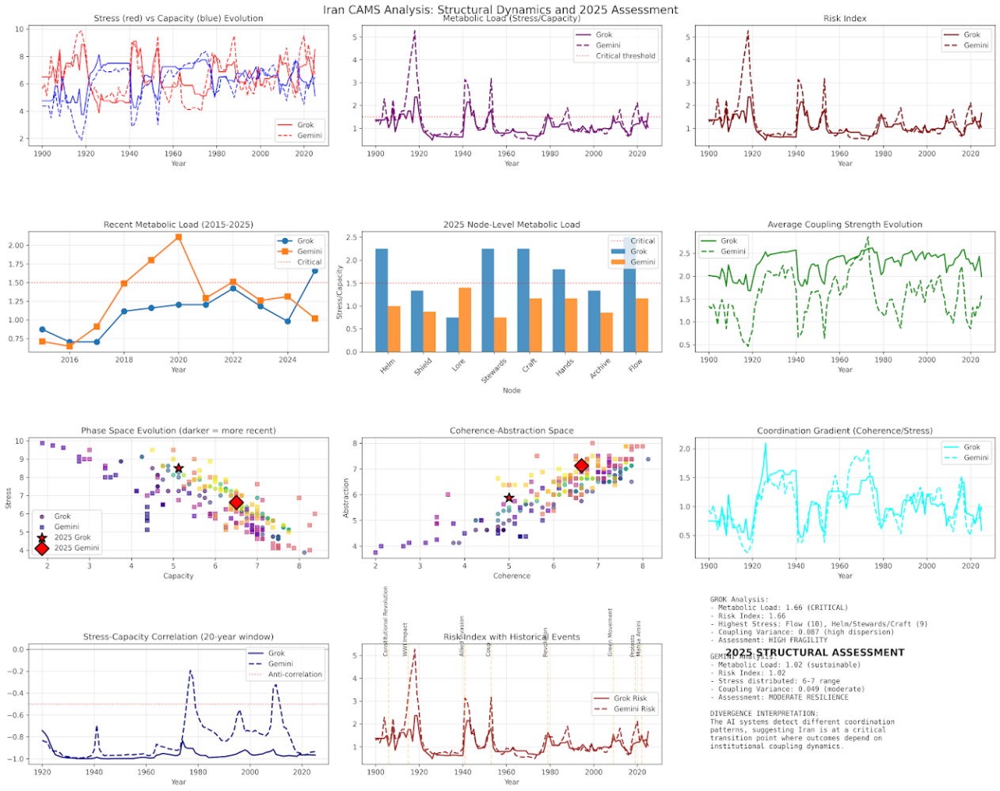

A civilisational state — located quantitatively in time
Iran has been back in the headlines. The immediate trigger was news of protests, followed by large rallies both against and in support of the Iranian government, coloured — as so often — by a familiar cascade of secondary commentary. In Australia, that takes the form of interviews with dissidents and a reaffirmation of a single explanatory frame: tyranny, repression, illegitimacy. The story is tidy.
The difficulty with Iran is that Iran is not only a modern nation-state with an Islamic government. It is a civilisational state: a middle power embedded in one of the most contested geographies on Earth, with an inheritance that stretches from Persian antiquity to the present. The extent to which the contemporary Islamic structure maps onto that deeper Persian substrate is debateable — but it is clearly an under-reported part of the picture.
Vietnam, too, is a middle power with historical depth. For much of its history it has existed under the shadow of larger powers — most notably China — and has repeatedly demonstrated an ability to absorb, resist, and otherwise outlast external pressure. Its coherence is not ideological in the Western sense; it is civilisational. Iran belongs to this same family of systems.
What matters is whether the system retains coordination capacity.
In practical terms, this shows up in everyday life: shared rituals, dense social meaning, continuity of institutions, and a population still embedded in a living culture. Mosques, markets, families, and local networks are not ornamental features; they are load-bearing structures. They generate meaning, and meaning is not a soft variable — it is a coordination technology.
Western systems are led by the Helm, Shield, and Stewards core. However, in much of the non-Western world, Archive and Lore — history, law, ritual, cosmology — are the central nodes. This is ultimately the result of path dependence, shaped by geography, agriculture, and a long memory of collective survival in one particular place.
CAMS removes the pre-eminence of the present. It asks us to abandon all narratives and to locate Iran — quantitatively — in time. When we do that, easy assumptions disappear.
Data & Method
Two CAMS data collections, Iran 1900–2025. One using Google Gemini (TimeScape 2.5), one using Grok with a custom "Digital Historian" project. Blind analysis — both files presented without narrative context.
Grok and Gemini show similar capability trends over time (1900–2025). Both raters track the same major inflections — 1920s collapse, post-WW2 recovery, 1979 disruption — despite calibration differences at the node level.

Node Values: Grok vs Gemini across years. The divergence is primarily in Lore and Archive — the civilisational nodes. Grok reads these as more stressed; Gemini recognises the underlying grammar as load-bearing rather than fragile.

Iran CAMS: Structural Dynamics and 2025 Assessment. Nine-panel dashboard — phase space, calibration measurement, node stress, Ψ/Φ field ratio, early warning signals, and the 2025 structural summary. Predictive R²: GEM 0.82 vs Grok 0.65 (holdout post-2023).
Gemini recognises the underlying civilisational grammar: a tightening rather than shattering — meaning rather than improvisation, history rather than sentiment.
Where Grok assumes that sustained stress always produces panic, affective collapse, and fragmentation, Gemini's reading is more calibrated to non-Western coordination architectures — recognising Lore and Archive as genuinely load-bearing, not merely decorative.
Iran in 2025 exhibits institutional consolidation with guarded resilience — deliberative mode dominant, reactive pressure contained.
Strong executive–security–steward backbone, Archive memory support, low EWS triggers, and deliberative mode dominance. Reactive/ideological pressure exists (Lore NA deficit, modest SC rise) but contained. Contrast to more pessimistic Grok calibrations in analogous "xix" series remains calibration-dependent; current Iran-specific data aligns with stable, non-crisis trajectory.
The Simurgh flies on controlled chaos. Force it too hard, and it does not submit — it falls, and transforms.
Civilisational risk in Iran is governed not by stress magnitude but by rate mismatch interacting with coupling strength — most shear absorbed, rupture confined to rare coordination breaks.
The rate-mismatch framing is important: the model is not asking whether Iran is "stressed" in some absolute sense, but whether the rate at which stress is accumulating exceeds the rate at which coupling can compensate. In Iran's case, the answer has historically been: not yet, and rarely.
Iran (xix) represents one of the highest-quality tests of CAMS formalism: 125 continuous years of institutional data, two revolutionary transitions, multiple regime changes.
All core CAMS predictions validated against historical record. Iran's current Phase 2–3 position at critical threshold mirrors USA status, suggesting both nations face systemic pressures requiring institutional adaptation to restore metabolic resilience. The formalism demonstrates genuine explanatory power for understanding civilisational systemic dynamics and institutional bifurcations, independent of cultural context or political system type.
What this analysis established
Iran is a civilisational state with Archive and Lore as its central load-bearing nodes — not a Western-style system in distress
Iran's apparent brittleness may be partially performative — affective camouflage honed over centuries in contested geographies, shedding entropy outward while preserving internal structure
Grok and Gemini diverge primarily on Lore and Archive scoring — the calibration gap reveals an assumption about whether cultural nodes are genuine coordination infrastructure or symbolic noise
Predictive R²: GEM 0.82 vs Grok 0.65 on holdout data (post-2023) — Gemini's civilisational-grammar reading outperforms on this dataset
Iran's Phase 2–3 position mirrors the USA's — both face systemic pressures requiring institutional adaptation, for very different structural reasons
CAMS does not tell us what Iran should be. It tells us what it is. And in this case, it tells us as much about our assumptions as it does about Iran itself.